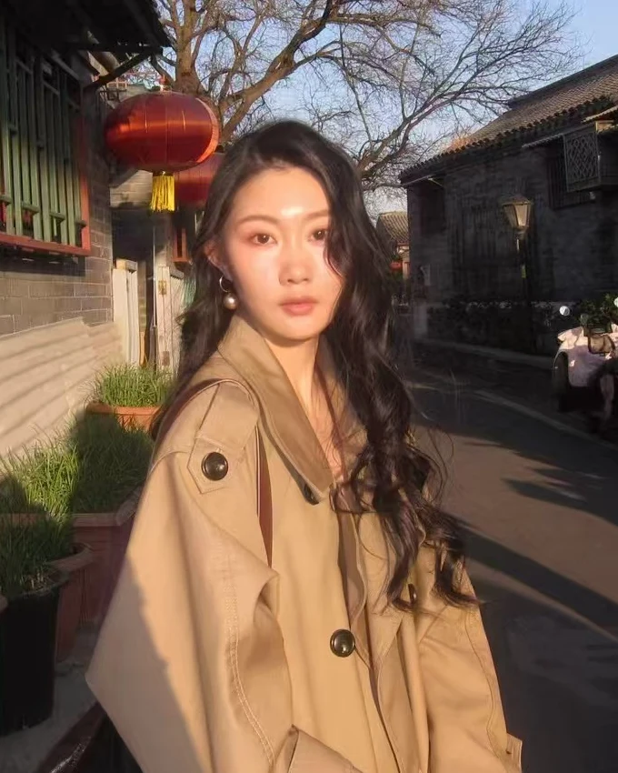

MY BACKGROUND & RESEARCH
教育与研究经历
教育背景 EDUCATION
项目与研究 EXPERIENCE
代表性成果 HIGHLIGHTS
技能与工具 SKILLS
Science, with a little imagination.查看完整简历 ↓

杜佳蔚 Jiawei Du
Biomedicine AI Curiosity
北京协和医学院遗传学硕士在读，预计 2027 年毕业。关注基因治疗、神经系统疾病、单细胞组学与 AI 辅助药物研发，尝试把湿实验、组学数据和 AI 工具结合起来。
13251891573@163.com